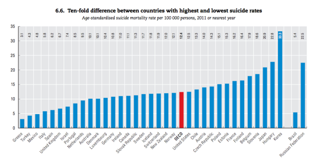

What is mental health? Why is it important?
Mental health is the well-being of our emtional, psychological and social life (mentalhealth.gov). Mental health may be effected by early experiences (trauma), family history or even biological factors, such as genes. Though external factors may influence our mental health, it may also be factored by our inner self, such as how one handles stress, and how optimistic one may be.
(Mental Health is a combination of multiple factors.)
mental wellness is an important factor in our lives, as it not only effects our inner health, but also physical health and vice versa. poor mental health may harm our physical health,
What creates a mentally healthy sociaty?
Why does Korea have a mental health problem?
There are many causes that creates the issue, Korea's culture, lack of leisure time or for elders, isolation. For now, we will focus on Korea's culture, and how it supresses on solving mental health issues. Korea, a member of the OECD, is known to have one of, or the, highest suicide rate amongst other members, having a person fall victim to suicide every 36 minutes, in average (The Korea Times). But although having such issues, it seems as there is not much effort on solving it.
Why does Korea not put effort against such efforts? With Korea's culture, it is hard for solutions to gain results. Koreans in general do not want to admit that they have a mental health issue, especially for elders. In a survey asking if depression means a weak mind, 78 percent of elderly Korean answered yes, while only 6 percent elderly American answered yes. Due to this view, people do not seek out for help, or view such act as being weak.
(If not treated, depression will act as a heavy load to carry throughout life.)
Korea's stance, Combined with the large percentage of people suffering from depression, and the fact that 50 percent of suicides are related to depression, Thus becomes very dangerous (Koo, Soo Kyung). And despite the growth of Korea's economy, the rate of depression has been increasing, partially due to the changes in social value (Koo, Soo Kyung).
It should also be noted that, many of the people who did have mental illness and went through treatment found their problem not by acknowledging their own inner self, but by physical illness due to mental illness.

(Rate of suicide, conducted by OECD)
So... we can't just increase the amount of therapiest?
No. Korea may seem as they lack therapists, or monetary support for them. But the core of the problem comes from the view of mental illness, not from the lack of therapists. Without fixing the core issue, other improvements that may be applied to fix the issue will not be as effective, since people will not make full use of it.
(Mental health therapy is not well known in Korea, compared to other developed nations)
Although it is valid to say that Korea does lack support for therapists, therapists by mental therapists. Why only mental therapists? Since Korea already has an at least above average system consisting physical therapists. The problem emerges as many of the work mental therapists do, are done by physical therapists (as stated above, Koreans tend to treat physical illness), or nurses. There is no established and specialized (or specialized enough) job for treating mental health issues. Even the word for "mental therapist", 작업치료사, is not well known in Korea.
How may we solve it?
As for many other problems, there is no one "Fix it all" solution for the problem.
As we end. . .
People seeking out for help due to mental illness must be seen with a more positive view. They should be encouraged to do so, as they are willing to change for the better, and were able to muster up their courage. And although, due to its culture, Korea may be an example of such, it should not be contained only in Korea.
Korea, as any other nations, will not change it's culture immediately. It will change slowly, and will take effort and interest from people to do so. But I believe that it is a nessesary change. Korea was able to grow a significant economy in a short duration, but due to the fast growth, has been behind in other areas. The culture in Korea may have progressed since the war, but there is still much more room for improvment.
Works cited
Korea's suicide rate highest among OECD members. (2018, Oct 29). The Korea Times Retrieved from http://ezproxy.fhda.edu/login?url=https://ezproxy.fhda.edu:2187/docview/2129438055?accountid=38235
Herald. “Korea Neglecting Mental Health Issues: Experts.” The Korea Herald, The Korea Herald, 10 July 2017, http://www.koreaherald.com/view.php?ud=20170710000535.
Koo, Soo Kyung. “Depression Status in Korea.” Osong Public Health and Research Perspectives, Korea Centers for Disease Control and Prevention, Aug. 2018, https://www.ncbi.nlm.nih.gov/pmc/articles/PMC6110326/.
Roh, Sungwon. “Mental Health Services and R&D in South Korea.” International Journal of Mental Health Systems, BioMed Central, 2 June 2016, https://www.ncbi.nlm.nih.gov/pmc/articles/PMC4890259/.
“South Korea's Mental Health Crisis.” KEI News, http://keia.org/south-korea’s-mental-health-crisis.
“South Korea's Mental Health Crisis.” The Peninsula, 13 Dec. 2018, http://blog.keia.org/2018/12/south-koreas-mental-health-crisis/.
Thelwell, Kim. “Mental Health in South Korea.” The Borgen Project, Kim Thelwell Https://Borgenproject.org/Wp-Content/Uploads/The_Borgen_Project_Logo_small.Jpg, 2 Dec. 2019, https://borgenproject.org/stressed-and-depressed-mental-health-in-south-korea/.
Leisure spending in south korea down on longer work hours. (2011, Apr 18). Asia in Focus Retrieved from http://ezproxy.fhda.edu/login?url=https://ezproxy.fhda.edu:2187/docview/865792583?accountid=38235